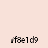

Havo is a flower branding that I would like to create for my mother. She has passion on opening the flower shop after retiring. By looking at the logo, people can quickly know which business a logo represents. That is a reason why I am using a clear image of charm peony - my mother's favorite flower in order to represent the logo. It is clean and elegant, giving you a sense of how your experience would be in the pretty flower shop.

Oliver Quin
ABCDEFGHIJKLMNOP
abcdefghijklmnopqrst
1234567890